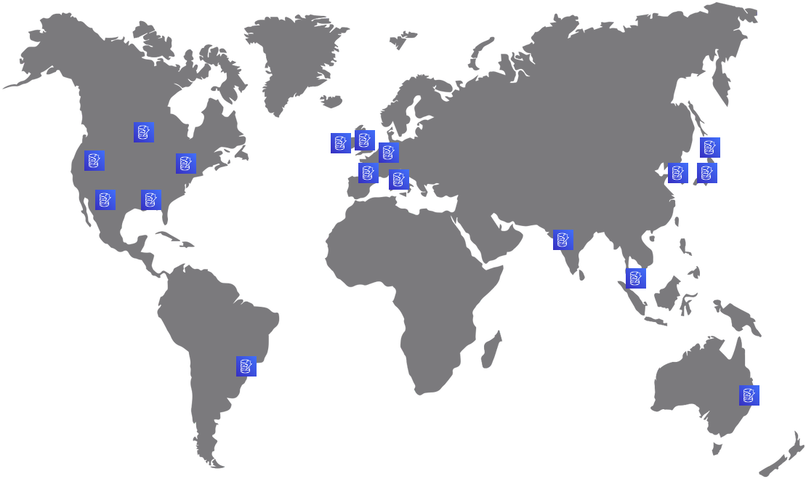

Serverless processing
Near and Far
Presented by John Doyle
DynamoDB
NoSQL Database
Region Based
Scalable
DynamoDB Streams
Time Ordered Squence of Events

DynamoDB Global Tables
Multi-Region replication
Multi-Master replication
Native
AWS CDK
const globalTable = new dynamodb.Table(this, 'GlobalTable', {
tableName: 'Example',
partitionKey: { name: 'id', type: dynamodb.AttributeType.STRING },
replicationRegions: ['us-east-1', 'us-east-2', 'us-west-2'],
});
Lambda
Serverless Functions
Runtime Language
Permissions